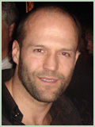

Джейсън Стейтъм (на английски: Jason Statham, правилен правопис на фамилията Стейдъм) е английски актьор, роден на 12 септември 1967 г. в Лондон. Известен е най-вече с ролите си в „Две димящи дула“, „Гепи“, Транспортер 1,2 и 3, „Италианската афера“, „Револвер“, „Огън в кръвта“ и „Смъртоносна надпревара“. Изпълнява почти всички каскади като бой, опасно шофиране, плуване сам, като само в краен случай използва дубльор.
Стейтъм от малък има интерес към спорта и тренира скокове във вода и бойни изкуства. В продължение на 12 години е част от английския национален отбор по скокове във вода, а през 1992 г. завършва на 12 място на световното първенство. В едно свое интервю Джейсън отрича разпространените сведения, че е участвал и на олимпийските игри в Сеул и Барселона. За него този спорт е просто едно хоби, от което не могат да се печелят пари. Затова е активен на черния пазар, продавайки “парфюми, бижутерия и други неща, които би трябвало да са скъпи” из лондонските улици. По време на тренировки в спортния център Кристъл Палас той е забелязан от търсач на таланти. Скоро след това става модел за дрехите на модната компания French Connection, известна още и като fcuk. Собственикът на fcuk, който е и продуцент на „Две димящи дула“ го представя на Гай Ричи, режисьор на филма. По това време Ричи търси човек, който да играе ролята на уличен търговец и, научавайки с какво Стейтъм си е изкарвал прехраната, го харесва за ролята на Бейкън.
„Две димящи дула“ е приет добре както от публиката, така и от критиката и буквално изстрелва Стейтъм в светлината на прожекторите. Две години по-късно — през 2000 г. - Стейтъм си партнира със звезди от ранга на Брад Пит, Вини Джоунс, Бенисио дел Торо и Денис Фарина във втория филм на Ричи - „Гепи“, който също жъне големи успехи. През 2001-а участва в два филма - „Призраци от Марс“ на Джон Карпентър и „Единственият“ с Джет Ли. В „Гаднярът“, където си партнира с цяла плеяда звезди на британското кино, играе ролята на опасен затворник, избран да участва във футболен мач между затворници и надзиратели. През 2002-а Стейтъм е избран от Люк Бесон за главната роля във филма „Транспортер“. Следват поддържащи роли в „Италианската афера“ и „Лондон“, преди отново да поеме главната роля в продържението на „Транспортер“, новия филм на Гай Ричи „Револвер“ и екшъна „Огън в кръвта“. Има малки роли в „Съучастникът“ с Том Круз и Джейми Фокс и в „Розовата пантера“ със Стив Мартин, Жан Рено и Бионсе.
В продължение на седем години Стейтъм излиза с британската актриса Кели Брук, преди тя да го изостави заради Били Зейн. По-късно за кратко отново се събират. През 2005-а Джейсън излиза с австралийската певица и актриса Софи Монк. Към 2010 г. той има връзка с супермодела и ангел на „Виктория Сикрет“ Роузи Хънтингтън-Уайтли.